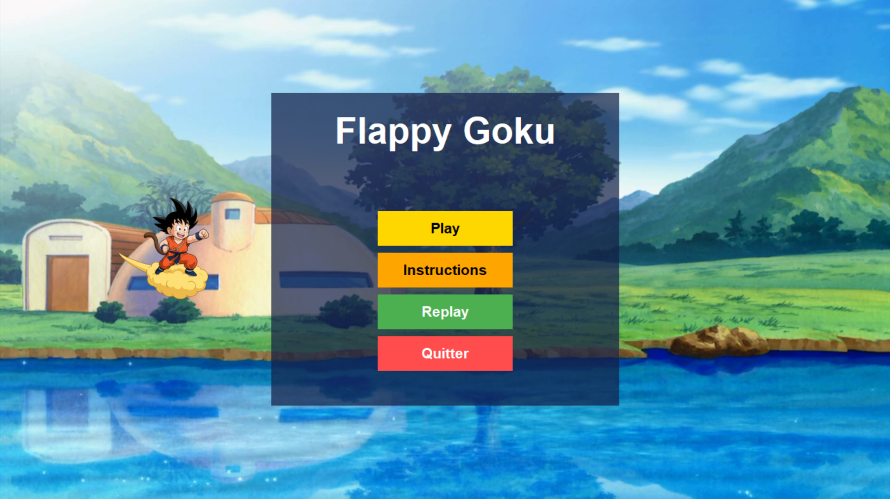

Reproduire le gameplay de Flappy Bird sur carte EasyPIC en développant un jeu temps réel : la logique du jeu et la physique du « bird » sont exécutées sur microcontrôleur, l’affichage étant géré à la fois sur un GLCD et sur une interface graphique Python via liaison USB.
Le joueur contrôle l’oiseau en utilisant plusieurs capteurs (IR, ultrasons, encodeur, bouton poussoir) afin de comparer la précision et la réactivité de chaque mode de contrôle.
Projet de microcontrôleur en équipe. Travail réalisé sur carte EasyPIC v7 avec PIC18, en C (XC8) et parties critiques en assembleur inline. Le projet suit une approche en V : conception, développement, intégration, tests et soutenance.
Schéma complet réalisé sous KiCad à partir de la documentation EasyPIC v7.
Calibration des capteurs (IR, US, encodeur) pour mesurer linéarité, précision et plage utile. Les résultats permettent d’ajuster les conversions physiques et d’optimiser le gameplay.
Le système permet de jouer à une version complète de Flappy Bird contrôlée par capteurs, avec affichage simultané GLCD + GUI Python, gestion du score, sons, menu complet et mode replay.